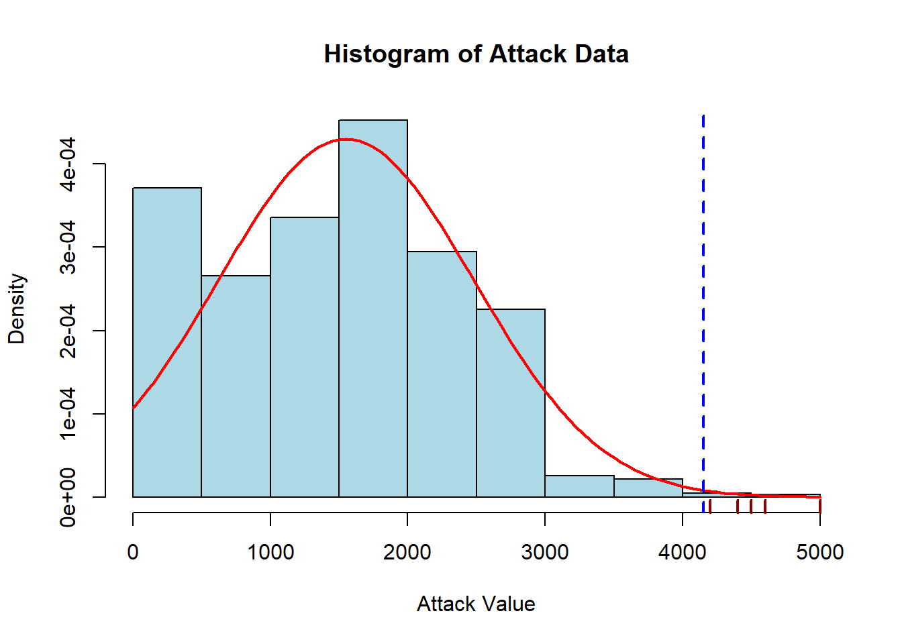
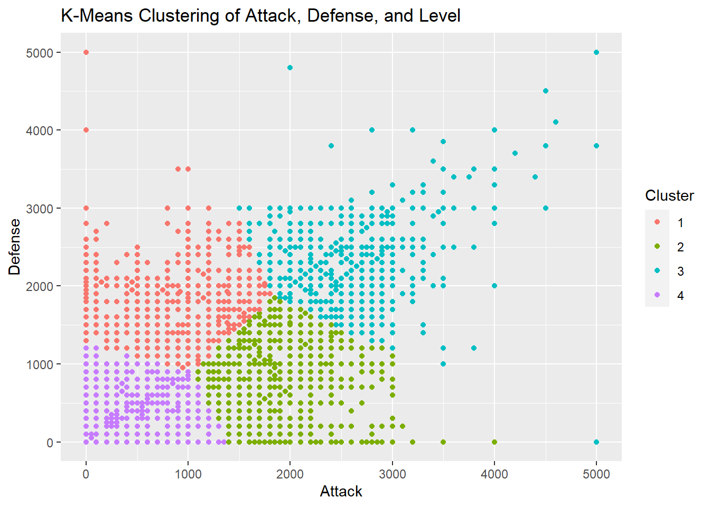
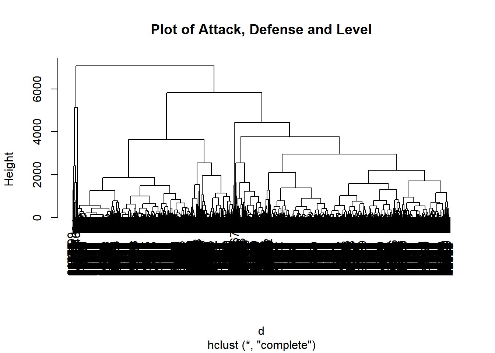

2 Yu-gi-oh! TCG Inferential Analysis
2.1 Introduction
Yu-gi-oh! is one of the strongest IPs on the entertainment industry to have come from Japan. The franchise, which started with the same name manga from 1996 grew to become a true powerhouse, spanning many works related to it such as many anime adaptations, movies and an array of merchandising. However, the most impactful and impressive work related to the IP is the eponymous card game, which originally spawned by the manga.
The trading card game was launched by Konami in 1999 in Japan and March 2002 in North America.[ As of January 2021, the game is estimated to have sold about 35 billion cards worldwide and grossed over ¥1 trillion ($9.64 billion). Needless to say, it has an impressive fame.
Throghout over two decades of existence, the card game has launched more than 12 thousand cards in its history. This analysis will try to do an inferential analysis on the available card data.
2.2 Considerations
Before we begin our analysis, we need to do some considerations first.
This study will focus solely on the western release of the card game, named TCG for Trading Card Game. The original card game, named OCG or basically the original japanese version works with a slightly different cardpool and restrictions than its western counterpart.
This study will be based on a database provided in the link https://github.com/Pietracoops/yugioh_cardlist_scraper/releases.
The latest data comes from the “Battle of Legend: Crystal Revenge” pack, launched in 2022/18/12.
This analysis will be conducted in R programming language using Rstudio.
This dataset goes until november 2022, and so it uses values from that time. This is included in the banlist for the game. Yu-gi-oh!, just like many card games occasionally decides to ban or limit certain cards in order to promote competitive balancing. A banned card will be listed as “Forbidden” in the dataset, and cards with no restriction are marked as “Unlimited”.
2.3 Before We Start
First of all, we need to have a basic understanding of how exactly are the Yu-gi-oh! cards. This will make the classification more understandable. For the sake of this presentation we don’t need to go by the game’s rules and its intricacies, but it’s important we understand how its cards are classified.
By and large, there are 3 type of cards in “Yu-gi-oh!”. Monster cards, Spell cards and Trap cards. While spell and trap cards have different classifications of how they are used, they all share common colors. Regardless of the type, all spell cards will have the same turquoise-blue color, and all the trap cards will have a violet like color, like the examples below.
Example of Spell and Trap, respectively
Now, an example of an average monster card
And finally, examples of the remaining types of cards
Fusion, Link, XYZ, Pendulum

synchro and ritual monster, respectively
These are examples of each type of card that we see in the card game. Now let’s move on to the analysis.
2.4 Prepping the Data
After we download the data and extract it, we can take a look on it and understand its formatting. All the tables in the dataset are saved separately as CSV files and sorted by its release set. Some cards are released in what we call “Booster boxes”, packages that have a randomized chance of having certain cards when opening them. Others come in special sets such as tins, special packs releasing with movies or events, and others even come in pre-made ready-to-play decks called “Structure Decks”. This division by itself could warrant an analysis, but that wont be necessary for this study.
For those who are not familiar with the game itself but are curious on how to play it, I recommend the link
https://www.wikihow.com/Play-Yu-Gi-Oh!
Since the data we downloaded are in CSV format, we might want to change the relevant data to Integer type. For the game of Yu-gi-Oh!, the following values are very important numerically: attack, defense, Link, Rank, Level and Pendulum Scale. Also, for the sake of simplicity, let’s convert all of the files into a single table. Since the separating value is a “$”, we need to specify it in our code. I’m also going to include the source of each table in a separate column, it might be useful for our analysis.
I’ve already compiled all of the dataset into a single CSV file in order to facilitate the reading and make things simpler while analyzing.
Now, we may have a quick glance at the data using R.
data <- read.csv("C:/Users/Lucas/Documents/R/yugioh/Yugioh_R_merged_data.csv")
data## Passcode Name Status Attribute type link link_arrows rank pendulum_scale
## 1 56619314 D/D/D Dragon King Pendragon Unlimited DARK [Fiend/Effect] NA <NA> NA NA
## 2 11761845 Beast of Talwar Unlimited DARK [Fiend/Normal] NA <NA> NA NA
## 3 49881766 Archfiend Soldier Unlimited DARK [Fiend/Normal] NA <NA> NA NA
## 4 54343893 Vice Dragon Unlimited DARK [Dragon/Effect] NA <NA> NA NA
## 5 85306040 Goblin Elite Attack Force Unlimited EARTH [Fiend/Effect] NA <NA> NA NA
## 6 84914462 Axe Dragonute Unlimited DARK [Dragon/Effect] NA <NA> NA NA
## 7 94664694 Mad Archfiend Unlimited DARK [Fiend/Effect] NA <NA> NA NA
## 8 12235475 Fabled Ashenveil Unlimited LIGHT [Fiend/Effect] NA <NA> NA NA
## 9 51838385 Theban Nightmare Unlimited LIGHT [Fiend/Effect] NA <NA> NA NA
## 10 16719802 Bright Star Dragon Unlimited LIGHT [Dragon/Effect] NA <NA> NA NA
## 11 20586572 Exploder Dragon Unlimited EARTH [Dragon/Effect] NA <NA> NA NA
## 12 48343627 Grave Squirmer Unlimited DARK [Fiend/Effect] NA <NA> NA NA
## 13 97169186 Smashing Ground Unlimited SPELL NA <NA> NA NA
## 14 5318639 Mystical Space Typhoon Unlimited SPELL NA <NA> NA NA
## 15 40619825 Axe of Despair Unlimited SPELL NA <NA> NA NA
## 16 10012614 Banner of Courage Unlimited SPELL NA <NA> NA NA
## 17 44095762 Mirror Force Unlimited TRAP NA <NA> NA NA
## 18 62279055 Magic Cylinder Unlimited TRAP NA <NA> NA NA
## 19 60082869 Dust Tornado Unlimited TRAP NA <NA> NA NA
## 20 57882509 Mask of Weakness Unlimited TRAP NA <NA> NA NA
## 21 97077563 Call of the Haunted Unlimited TRAP NA <NA> NA NA
## 22 19221310 Odd-Eyes Saber Dragon Unlimited LIGHT [Dragon/Effect] NA <NA> NA NA
## 23 43096270 Alexandrite Dragon Unlimited LIGHT [Dragon/Normal] NA <NA> NA NA
## 24 15025844 Mystical Elf Unlimited LIGHT [Spellcaster/Normal] NA <NA> NA NA
## 25 53025096 Odd-Eyes Dragon Unlimited DARK [Dragon/Effect] NA <NA> NA NA
## 26 70095154 Cyber Dragon Unlimited LIGHT [Machine/Effect] NA <NA> NA NA
## 27 66337215 Herald of Creation Unlimited LIGHT [Spellcaster/Effect] NA <NA> NA NA
## 28 15960641 Mirage Dragon Unlimited LIGHT [Dragon/Effect] NA <NA> NA NA
## 29 93013676 Maha Vailo Unlimited LIGHT [Spellcaster/Effect] NA <NA> NA NA
## 30 38520918 Ancient Dragon Unlimited LIGHT [Dragon/Effect] NA <NA> NA NA
## 31 14506878 DUCKER Mobile Cannon Unlimited LIGHT [Machine/Flip/Effect] NA <NA> NA NA
## 32 60694662 Skelengel Unlimited LIGHT [Fairy/Flip/Effect] NA <NA> NA NA
## 33 51196174 The Calculator Unlimited LIGHT [Thunder/Effect] NA <NA> NA NA
## 34 53129443 Dark Hole Unlimited SPELL NA <NA> NA NA
## 35 70046172 Rush Recklessly Unlimited SPELL NA <NA> NA NA
## 36 65169794 Black Pendant Unlimited SPELL NA <NA> NA NA
## 37 99597615 Malevolent Nuzzler Unlimited SPELL NA <NA> NA NA
## 38 4206964 Trap Hole Unlimited TRAP NA <NA> NA NA
## 39 44509898 Pinpoint Guard Unlimited TRAP NA <NA> NA NA
## 40 14315573 Negate Attack Unlimited TRAP NA <NA> NA NA
## 41 76902476 Mecha Phantom Beast Turtletracer Unlimited WIND [Machine/Effect] NA <NA> NA NA
## 42 79867938 Battlin' Boxer Headgeared Unlimited FIRE [Warrior/Effect] NA <NA> NA NA
## 43 5361647 Battlin' Boxer Glassjaw Unlimited FIRE [Warrior/Effect] NA <NA> NA NA
## 44 32750341 Battlin' Boxer Sparrer Unlimited FIRE [Warrior/Effect] NA <NA> NA NA
## 45 68144350 Battlin' Boxer Switchitter Unlimited FIRE [Warrior/Effect] NA <NA> NA NA
## level attack defense spell_attribute summoning_condition pendulum_condition
## 1 7 2600 2400 <NA> <NA>
## 2 6 2400 2150 <NA> <NA>
## 3 4 1900 1500 <NA> <NA>
## 4 5 2000 2400 <NA> <NA>
## 5 4 2200 1500 <NA> <NA>
## 6 4 2000 1200 <NA> <NA>
## 7 4 1800 0 <NA> <NA>
## 8 4 1600 1200 <NA> <NA>
## 9 4 1500 500 <NA> <NA>
## 10 4 1900 1000 <NA> <NA>
## 11 3 1000 0 <NA> <NA>
## 12 1 0 0 <NA> <NA>
## 13 NA NA NA <NA> <NA>
## 14 NA NA NA Quick-Play <NA> <NA>
## 15 NA NA NA Equip <NA> <NA>
## 16 NA NA NA Continuous <NA> <NA>
## 17 NA NA NA <NA> <NA>
## 18 NA NA NA <NA> <NA>
## 19 NA NA NA <NA> <NA>
## 20 NA NA NA <NA> <NA>
## 21 NA NA NA Continuous <NA> <NA>
## 22 7 2800 2000 <NA> <NA>
## 23 4 2000 100 <NA> <NA>
## 24 4 800 2000 <NA> <NA>
## 25 7 2500 2000 <NA> <NA>
## 26 5 2100 1600 <NA> <NA>
## 27 4 1800 600 <NA> <NA>
## 28 4 1600 600 <NA> <NA>
## 29 4 1550 1400 <NA> <NA>
## 30 4 1400 1300 <NA> <NA>
## 31 3 500 500 <NA> <NA>
## 32 2 900 400 <NA> <NA>
## 33 2 NA 0 <NA> <NA>
## 34 NA NA NA <NA> <NA>
## 35 NA NA NA Quick-Play <NA> <NA>
## 36 NA NA NA Equip <NA> <NA>
## 37 NA NA NA Equip <NA> <NA>
## 38 NA NA NA <NA> <NA>
## 39 NA NA NA <NA> <NA>
## 40 NA NA NA Counter <NA> <NA>
## 41 3 500 2000 <NA>
## 42 4 1000 1800 <NA>
## 43 4 2000 0 <NA>
## 44 4 1200 1400 <NA>
## 45 4 1500 1400 <NA>
## card_text
## 1 If this card is in your hand: You can Tribute 1 Dragon-Type monster and 1 other Fiend-Type monster from your hand and/or your side of the field; Special Summon this card. Once per turn: You can discard 1 card; this card gains 500 ATK, then you can destroy 1 Spell/Trap Card on the field. This ATK increase lasts until the end of this turn.
## 2 Only the master of the sword among Fiend-Type monsters is permitted to hold the Talwar.(This card is always treated as an "Archfiend" card.)
## 3 An expert at battle who belongs to a crack diabolical unit. He's famous because he always gets the job done.
## 4 If your opponent controls a monster and you control no monsters, you can Special Summon this card (from your hand), but its original ATK and DEF become halved.
## 5 If this card attacks, it is changed to Defense Position at the end of the Battle Phase, and its battle position cannot be changed until the end of your next turn.
## 6 If this card attacks, it is changed to Defense Position at the end of the Damage Step.
## 7 If this card attacks a Defense Position monster, inflict piercing battle damage to your opponent. If this face-up Attack Position card is targeted for an attack: Change it to Defense Position.
## 8 Once per battle, if this card battles, during damage calculation (Quick Effect): You can send 1 card from your hand to the GY; this card gains 600 ATK during that damage calculation only.
## 9 Gains 1500 ATK while you have no cards in your hand nor in your Spell & Trap Zones.
## 10 When this card is Normal Summoned: You can target 1 other face-up monster on the field; increase that target's Level by 2 until the end of this turn.
## 11 If this card is destroyed by battle and sent to the GY: Destroy the monster that destroyed it. Neither player takes any battle damage from attacks involving this attacking card.
## 12 If this card is destroyed by battle and sent to the GY: Target 1 card on the field; destroy that target.
## 13 Destroy the 1 face-up monster your opponent controls that has the highest DEF (your choice, if tied).
## 14 Target 1 Spell/Trap on the field; destroy that target.
## 15 (This card is always treated as an "Archfiend" card.)The equipped monster gains 1000 ATK. When this card is sent from the field to the Graveyard: You can Tribute 1 monster; place this card on the top of your Deck.
## 16 All monsters you control gain 200 ATK during your Battle Phase only.
## 17 When an opponent's monster declares an attack: Destroy all your opponent's Attack Position monsters.
## 18 When an opponent's monster declares an attack: Target the attacking monster; negate the attack, and if you do, inflict damage to your opponent equal to its ATK.
## 19 Target 1 Spell/Trap your opponent controls; destroy that target, then you can Set 1 Spell/Trap from your hand.
## 20 Target 1 attacking monster; that target loses 700 ATK until the end of this turn.
## 21 Activate this card by targeting 1 monster in your GY; Special Summon that target in Attack Position. When this card leaves the field, destroy that monster. When that monster is destroyed, destroy this card.
## 22 If this card is in your hand: You can Tribute 1 LIGHT monster; send 1 "Odd-Eyes Dragon" from your hand, Deck, or your side of the field to the Graveyard, and if you do, Special Summon this card. When this card destroys a monster by battle and sends it to the Graveyard: You can destroy 1 monster your opponent controls.
## 23 Many of the czars' lost jewels can be found in the scales of this priceless dragon. Its creator remains a mystery, along with how they acquired the imperial treasures. But whosoever finds this dragon has hit the jackpot... whether they know it or not.
## 24 A delicate elf that lacks offense, but has a terrific defense backed by mystical power.
## 25 If this card destroys an opponent's monster by battle and sends it to the Graveyard: Inflict damage to your opponent equal to half the original ATK of that monster in the Graveyard.
## 26 If only your opponent controls a monster, you can Special Summon this card (from your hand).
## 27 Once per turn: You can discard 1 card, then target 1 Level 7 or higher monster in your Graveyard; add that target to your hand.
## 28 Your opponent cannot activate Trap Cards during the Battle Phase.
## 29 Gains 500 ATK for each Equip Card equipped to this card.
## 30 When this card inflicts battle damage to your opponent by a direct attack: You can increase this card's Level by 1 and ATK by 500.
## 31 FLIP: Target 1 Level 4 monster in your GY; add that target to your hand.
## 32 FLIP: Draw 1 card.
## 33 The ATK of this card is the combined Levels of all face-up monsters you control x 300.
## 34 Destroy all monsters on the field.
## 35 Target 1 face-up monster on the field; it gains 700 ATK until the end of this turn.
## 36 The equipped monster gains 500 ATK. When this card is sent from the field to the Graveyard: Inflict 500 damage to your opponent.
## 37 The equipped monster gains 700 ATK. When this card is sent from the field to the Graveyard: You can pay 500 LP; place this card on the top of your Deck.
## 38 When your opponent Normal or Flip Summons 1 monster with 1000 or more ATK: Target that monster; destroy that target.
## 39 When an opponent's monster declares an attack: Target 1 Level 4 or lower monster in your Graveyard; Special Summon it in Defense Position. It cannot be destroyed by battle or card effects this turn.
## 40 When an opponent's monster declares an attack: Target the attacking monster; negate the attack, then end the Battle Phase.
## 41 This card's Level is increased by the total Levels of all "Mecha Phantom Beast Tokens" you control. While you control a Token, this card cannot be destroyed by battle or card effects. Each turn, the first "Mecha Phantom Beast Token" you control that would be destroyed by battle, is not destroyed.
## 42 When this card is Normal Summoned: You can send 1 "Battlin' Boxer" monster from your Deck to the Graveyard. Once per turn, this face-up Attack Position card cannot be destroyed by battle.
## 43 When this card is targeted for an attack: Destroy this card. When this card is sent to the Graveyard by a card effect: You can target 1 "Battlin' Boxer" monster in your Graveyard, except "Battlin' Boxer Glassjaw"; add that target to your hand.
## 44 If you control a "Battlin' Boxer" monster, you can Special Summon this card (from your hand). If you do, you cannot conduct your Battle Phase for the rest of this turn.
## 45 When this card is Normal Summoned: You can target 1 "Battlin' Boxer" monster in your Graveyard; Special Summon that target. You cannot Special Summon any monsters during the turn you activate this effect, except "Battlin' Boxer" monsters.
## card_supports card_anti_supports
## 1 Dragon/Fiend <NA>
## 2 <NA>
## 3 <NA>
## 4 <NA>
## 5 <NA>
## 6 <NA>
## 7 <NA>
## 8 <NA>
## 9 <NA>
## 10 <NA>
## 11 <NA>
## 12 <NA>
## 13 <NA>
## 14 <NA>
## 15 <NA>
## 16 <NA>
## 17 <NA>
## 18 <NA>
## 19 <NA>
## 20 <NA>
## 21 <NA>
## 22 LIGHT/Odd-Eyes Dragon <NA>
## 23 <NA>
## 24 <NA>
## 25 <NA>
## 26 <NA>
## 27 <NA>
## 28 <NA>
## 29 Equip Card <NA>
## 30 <NA>
## 31 <NA>
## 32 <NA>
## 33 <NA>
## 34 <NA>
## 35 <NA>
## 36 <NA>
## 37 <NA>
## 38 <NA>
## 39 <NA>
## 40 <NA>
## 41 Mecha Phantom Beast Token
## 42 Supports archetypes /Battlin' Boxer
## 43 Supports archetypes /Battlin' Boxer
## 44 Supports archetypes /Battlin' Boxer
## 45 Supports archetypes /Battlin' Boxer
## card_actions
## 1 Tributes for cost/Discards for cost
## 2
## 3
## 4 Activates from your hand
## 5 Changes battle positions/Prevents Battle Position changes
## 6 Changes battle positions
## 7 Changes battle positions
## 8 Sends from hand to Graveyard for cost
## 9
## 10 Activates upon Normal Summon
## 11 Activates if destroyed by battle/Activates from your Graveyard
## 12 Activates if destroyed by battle/Activates from your Graveyard
## 13
## 14
## 15 Activates from your Graveyard/Tributes for cost/Returns itself from Graveyard to Deck
## 16
## 17 Activates upon attack declaration
## 18 Activates upon attack declaration
## 19 Sets from your hand
## 20 Activates upon attack declaration
## 21
## 22 Activates from your hand/Tributes for cost/Sends from your hand to your Graveyard/Sends from your Deck to your Graveyard/Sends from your field to your Graveyard/Activates when it destroys a monster by battle
## 23
## 24
## 25 Activates when it destroys a monster by battle
## 26 Activates from your hand
## 27 Discards for cost/Adds from Graveyard to hand
## 28
## 29
## 30 Activates when it inflicts battle damage
## 31 Activates upon being flipped face-up/Adds from Graveyard to hand
## 32 You draw cards
## 33
## 34
## 35
## 36 Activates from your Graveyard
## 37 Activates from your Graveyard/Returns itself from Graveyard to Deck
## 38
## 39 Activates upon attack declaration
## 40 Activates upon attack declaration/Ends the Battle Phase
## 41
## 42 Sends from your Deck to your Graveyard
## 43 Activates upon attack declaration/Activates from your Graveyard/Adds from Graveyard to hand
## 44 Cannot conduct Battle Phase
## 45 Activates upon Normal Summon
## effect_types X source
## 1 Ignition NA 2-PLAYER STARTER DECK YUYA & DECLAN (UK)
## 2 NA 2-PLAYER STARTER DECK YUYA & DECLAN (UK)
## 3 NA 2-PLAYER STARTER DECK YUYA & DECLAN (UK)
## 4 Summon NA 2-PLAYER STARTER DECK YUYA & DECLAN (UK)
## 5 Continuous NA 2-PLAYER STARTER DECK YUYA & DECLAN (UK)
## 6 Continuous NA 2-PLAYER STARTER DECK YUYA & DECLAN (UK)
## 7 Continuous/Trigger NA 2-PLAYER STARTER DECK YUYA & DECLAN (UK)
## 8 Quick NA 2-PLAYER STARTER DECK YUYA & DECLAN (UK)
## 9 Continuous NA 2-PLAYER STARTER DECK YUYA & DECLAN (UK)
## 10 Trigger NA 2-PLAYER STARTER DECK YUYA & DECLAN (UK)
## 11 Trigger/Continuous NA 2-PLAYER STARTER DECK YUYA & DECLAN (UK)
## 12 Trigger NA 2-PLAYER STARTER DECK YUYA & DECLAN (UK)
## 13 Effect NA 2-PLAYER STARTER DECK YUYA & DECLAN (UK)
## 14 Effect NA 2-PLAYER STARTER DECK YUYA & DECLAN (UK)
## 15 Condition/Continuous-like/Trigger-like NA 2-PLAYER STARTER DECK YUYA & DECLAN (UK)
## 16 Continuous-like NA 2-PLAYER STARTER DECK YUYA & DECLAN (UK)
## 17 Activation requirement/Effect NA 2-PLAYER STARTER DECK YUYA & DECLAN (UK)
## 18 Activation requirement/Effect NA 2-PLAYER STARTER DECK YUYA & DECLAN (UK)
## 19 Effect NA 2-PLAYER STARTER DECK YUYA & DECLAN (UK)
## 20 Effect NA 2-PLAYER STARTER DECK YUYA & DECLAN (UK)
## 21 Effect/Continuous-like NA 2-PLAYER STARTER DECK YUYA & DECLAN (UK)
## 22 Ignition/Trigger NA 2-PLAYER STARTER DECK YUYA & DECLAN (UK)
## 23 NA 2-PLAYER STARTER DECK YUYA & DECLAN (UK)
## 24 NA 2-PLAYER STARTER DECK YUYA & DECLAN (UK)
## 25 Trigger NA 2-PLAYER STARTER DECK YUYA & DECLAN (UK)
## 26 Unclassified NA 2-PLAYER STARTER DECK YUYA & DECLAN (UK)
## 27 Ignition NA 2-PLAYER STARTER DECK YUYA & DECLAN (UK)
## 28 Continuous NA 2-PLAYER STARTER DECK YUYA & DECLAN (UK)
## 29 Continuous NA 2-PLAYER STARTER DECK YUYA & DECLAN (UK)
## 30 Trigger NA 2-PLAYER STARTER DECK YUYA & DECLAN (UK)
## 31 Flip NA 2-PLAYER STARTER DECK YUYA & DECLAN (UK)
## 32 Flip NA 2-PLAYER STARTER DECK YUYA & DECLAN (UK)
## 33 Continuous NA 2-PLAYER STARTER DECK YUYA & DECLAN (UK)
## 34 Effect NA 2-PLAYER STARTER DECK YUYA & DECLAN (UK)
## 35 Effect NA 2-PLAYER STARTER DECK YUYA & DECLAN (UK)
## 36 Continuous-like/Trigger-like NA 2-PLAYER STARTER DECK YUYA & DECLAN (UK)
## 37 Continuous-like/Trigger-like NA 2-PLAYER STARTER DECK YUYA & DECLAN (UK)
## 38 Activation requirement/Effect NA 2-PLAYER STARTER DECK YUYA & DECLAN (UK)
## 39 Activation requirement/Effect NA 2-PLAYER STARTER DECK YUYA & DECLAN (UK)
## 40 Activation requirement/Effect NA 2-PLAYER STARTER DECK YUYA & DECLAN (UK)
## 41 Continuous NA 2014 MEGA-TINS MEGA PACK
## 42 Trigger/Continuous NA 2014 MEGA-TINS MEGA PACK
## 43 Trigger NA 2014 MEGA-TINS MEGA PACK
## 44 Summon/Condition NA 2014 MEGA-TINS MEGA PACK
## 45 Trigger/Condition NA 2014 MEGA-TINS MEGA PACK
## [ reached 'max' / getOption("max.print") -- omitted 29766 rows ]There we have it. But something is off. If the number of existing cards barely surpasses 12.000, it seems weird that we have almost 29.811 different rows. Let’s investigate by checking the number of different card names we have. We can make a function for that.
distinct_names <- data %>%
distinct(Name) %>%
nrow()
distinct_names## [1] 11694This seems more likely. However we have to ask now: why do we have so many rows then? An hypothesis is that the same card can appear in different sets. In fact, some cards even have alternative artworks, but by the game rules they are all considered the same. Just like the following example:

All of these are the same monster. For the game, you could literally use any of these and any would have the same effects and values. In Yu-gi-oh!, card uniqueness is dictated by the card name above all else. Be mindful that each deck can only have 3 copies of the same card, regardless of what different artworks you use.
Now, let’s do two things: change the “Source” column to “Set”, for the sake of sounding more adequate for our analysis.
data <- rename(data, Set = source)
colnames(data)## [1] "Passcode" "Name" "Status" "Attribute" "type"
## [6] "link" "link_arrows" "rank" "pendulum_scale" "level"
## [11] "attack" "defense" "spell_attribute" "summoning_condition" "pendulum_condition"
## [16] "card_text" "card_supports" "card_anti_supports" "card_actions" "effect_types"
## [21] "X" "Set"Now, just in case, let’s try an example. Let’s look for a particular card that appears in different sets. Let’s use the example of “Dark Magician”, showed above, as it’s one of the most popular cards in the game and so it will surely be included in various Sets.
dark_magician <- data[data$Name == "Dark Magician", ]
head(dark_magician)## Passcode Name Status Attribute type link link_arrows rank pendulum_scale level attack defense
## 788 46986414 Dark Magician Unlimited DARK [Spellcaster/Normal] NA <NA> NA NA 7 2500 2100
## 1037 46986414 Dark Magician Unlimited DARK [Spellcaster/Normal] NA NA NA 7 2500 2100
## 3215 46986414 Dark Magician Unlimited DARK [Spellcaster/Normal] NA NA NA 7 2500 2100
## 4796 46986414 Dark Magician Unlimited DARK [Spellcaster/Normal] NA <NA> NA NA 7 2500 2100
## 4802 46986414 Dark Magician Unlimited DARK [Spellcaster/Normal] NA <NA> NA NA 7 2500 2100
## 6690 46986414 Dark Magician Unlimited DARK [Spellcaster/Normal] NA <NA> NA NA 7 2500 2100
## spell_attribute summoning_condition pendulum_condition card_text card_supports
## 788 <NA> The ultimate wizard in terms of attack and defense.
## 1037 <NA> The ultimate wizard in terms of attack and defense.
## 3215 The ultimate wizard in terms of attack and defense.
## 4796 <NA> <NA> <NA> The ultimate wizard in terms of attack and defense.
## 4802 <NA> <NA> The ultimate wizard in terms of attack and defense. <NA>
## 6690 <NA> The ultimate wizard in terms of attack and defense.
## card_anti_supports card_actions effect_types X Set
## 788 <NA> NA 2016 MEGA-TINS
## 1037 NA 2017 MEGA-TINS
## 3215 NA BATTLE OF CHAOS
## 4796 <NA> <NA> NA BOOSTER PACK TIN 2002
## 4802 NA BOOSTER PACK TIN 2003
## 6690 NA DARK BEGINNING 1Dark Magician was included in 45 different sets throughout the game’s history. Since it’s not the only card with repeated appearances, that should explain the extra number of rows. We can also do that for other popular cards such as the iconic “Blue-eyes White Dragon”, but that is not necessary at the moment. Now that the data is prepared, we can go on to our next step of the analysis.
2.5 Quantitative showings of Archetypes, attributes and types
At first, while analyzing something like a videogame or a card game, we need to understand what could be considered important. As a 20 year old game, Yu-gi-oh! saw many experiments and interactions in its formula. While the initial period seemed somewhat experimental, some changes along the way shaped much of its path and design choices for the future. As a business, understanding a firm guideline to take can greatly streamline the creative process for future releases as well and helping the consumers to understand what kind of property it is about.
As we saw before, the cards have many divisions, and the layering of them it is what makes gameplay strategies so complex. It may not be seen at first by just looking at the dataset, but by knowing the game’s history is that some years after the initial release and early experimentation Konami - the holders of the license for the card game - came into the “Archetype” formula for card design. And what exactly is an archetype?
Part of the “Danger!” Archetype
An archetype is basically a “theme” by which some cards go in. This theme may be many different things. On the example above, the “Danger!” archetype is based on real life cryptids, that is, supposedly creatures that have a questionable status if they actually exist or not. However, inspirations for archetypes are varied and they may come from all corners of fantasy and even some from the real world, with each archetype containing numerous cards, some even to the dozen or so, depending on their popularity. There are more than 300 archetypes in the game currently. We can confirm this by looking at the data.
We can see above that we have a column called “Card_supports”, which explains what kind of archetype it supports. Let’s be mindful however that this column also explains what kind of card or theme it can support, not necessarily an archetype per se, and not every card supports something in specific, so not all cards of the game will have a value on this column. For example, we have generic non-archetype supports like “DARK” listed here, as well as a value stating “Supports archetype”. With a new function, we can remove these “supports archetype” values and see a trimmed down list. We also have to be mindful that occasionally some cards can be part of two different archetypes, as some archetypes have lore that intertwines two or more of them, and have some common cards in-between them.
pattern <- "Supports archetypes /" # specify the pattern you want to extract
# filter for cards that support archetypes
archetypes <- data %>%
filter(str_detect(card_supports, pattern)) %>%
mutate(card_supports = str_replace(card_supports, pattern, "")) %>%
# combine D/D/D and D/D/D/D/D into one archetype
mutate(card_supports = if_else(card_supports %in% c("D/D", "D/D/D", "D/", "D/D/D/D/D"), "DDD", card_supports)) %>%
separate_rows(card_supports, sep = "/") %>%
mutate(card_supports = trimws(card_supports)) %>%
# group by archetype and count occurrences
group_by(card_supports) %>%
summarize(count = n()) %>%
# adding a sum of "D" and "DDD" rows and assign the result to only "DDD"
mutate(card_supports = if_else(card_supports == "D", "DDD", card_supports)) %>%
group_by(card_supports) %>%
summarize(count = sum(count)) %>%
# sort by count in descending order
arrange(desc(count))
archetypes## # A tibble: 481 × 2
## card_supports count
## <chr> <int>
## 1 Crystal Beast 200
## 2 Elemental HERO 197
## 3 Blackwing 189
## 4 DDD 156
## 5 Six Samurai 152
## 6 Destiny HERO 133
## 7 Performapal 129
## 8 HERO 117
## 9 Gladiator Beast 111
## 10 Lightsworn 95
## # … with 471 more rowsBecause of how we separate the “Supports archetypes/” marker, we need to add an exception to it to remove it from the overall count. We also need to be mindful that the archetype “D/D/D” might be a nightmare to separate because of its special wording, which constantly will clash with the separator “/”, so we need to specify an exception.
With this data in hand, we can plot our first graph visualization. Because of the sheer number of variables in the archetypes, let’s limit the visualization for the 20 most popular ones. For that, let’s create a new variable called “top_20_archetypes”.
pattern <- "Supports archetypes /" #Removing the pattern
# filtering for cards that support archetypes
top_20_archetypes <- data %>%
filter(str_detect(card_supports, pattern)) %>%
mutate(card_supports = str_replace(card_supports, pattern, "")) %>%
# combining D/D/D and D/D/D/D/D into one archetype
mutate(card_supports = if_else(card_supports %in% c("D/D", "D/D/D", "D/", "D/D/D/D/D"), "DDD", card_supports)) %>%
separate_rows(card_supports, sep = "/") %>%
mutate(card_supports = trimws(card_supports)) %>%
# grouping by archetype and counting occurrences
group_by(card_supports) %>%
summarize(count = n()) %>%
# adding "D" and "DDD" to only "DDD"
mutate(card_supports = if_else(card_supports == "D", "DDD", card_supports)) %>%
group_by(card_supports) %>%
summarize(count = sum(count)) %>%
top_n(20, count) %>%
# sort by count in descending order
arrange(desc(count))
top_20_archetypes## # A tibble: 22 × 2
## card_supports count
## <chr> <int>
## 1 Crystal Beast 200
## 2 Elemental HERO 197
## 3 Blackwing 189
## 4 DDD 156
## 5 Six Samurai 152
## 6 Destiny HERO 133
## 7 Performapal 129
## 8 HERO 117
## 9 Gladiator Beast 111
## 10 Lightsworn 95
## # … with 12 more rowsp <- ggplot(top_20_archetypes, aes(x = card_supports, y = count)) +
geom_bar(stat = "identity") +
xlab("Archetype") +
ylab("Number of Cards") +
ggtitle("Top 20 Archetypes")
p + theme(axis.text.x = element_text(angle = 75, hjust = 1))Using the same principles, we can also understand other quantitative metrics such as “attribute”, “type” and if the card is a “normal”, “effect”, “fusion”, “synchro” or so on. First, let’s try to plot the data by attributes.
colors <- c("DARK" = "purple", "SPELL" = "turquoise1", "TRAP" = "violetred1", "DIVINE" = "gold",
"WATER" = "blue", "EARTH" = "brown", "WIND" = "green", "FIRE" = "red", "LIGHT" = "grey70")
data %>%
filter(Attribute %in% c("DARK", "SPELL", "TRAP", "DIVINE", "WATER", "EARTH", "WIND", "FIRE", "LIGHT")) %>%
group_by(Attribute) %>%
summarize(count = n(), unique_names = n_distinct(Name)) %>%
ggplot(aes(x = Attribute, y = count, fill = Attribute)) +
geom_bar(stat = "identity") +
scale_fill_manual(values = colors) +
xlab("Attribute") +
ylab("Number of Cards") +
ggtitle("Attribute distribution") +
theme(axis.text.x = element_text(angle = 75, hjust = 1))Seeing by the graph, spells are surprisingly popular, being by far the most popular type of card. Amongst the monsters, “DARK” takes the top spot with the most representatives while “DIVINE” accounts for very few. Just out of curiosity, let’s see how many “DIVINE” are in the game. By comparisson, let’s see how many “DARK” monsters there are exactly.
divine_count <- table(data$Attribute)["DIVINE"]
print(divine_count)## DIVINE
## 42dark_count <- table(data$Attribute)["DARK"]
print(dark_count)## DARK
## 5605It is a great contrast. “Divine” monsters really are rare in the game.
Now, within the monsters, let’s see how this division works using a chart.
#Subsetting the data to only include monsters and specified types
types <- c("Normal", "Effect", "Ritual", "Fusion", "Synchro", "Xyz", "Pendulum", "Link","Tuner")
monsters <- subset(data, !is.na(Attribute) & Attribute != "SPELL" & Attribute != "TRAP")
#Counting the number of monsters of each type
type_counts <- unlist(sapply(types, function(type) {
sum(str_detect(monsters$type, type))
}))
#Calculating the percentage of monsters of each type
type_pct <- round(type_counts/sum(type_counts)*100)
type_data <- data.frame(type_labels = names(type_counts),
type_counts = type_counts,
type_pct = type_pct)
#Assigning colors to each type
type_colors <- c("Normal" = "burlywood3",
"Effect" = "burlywood4",
"Link" = "blue4",
"Fusion" = "darkmagenta",
"Pendulum" = "turquoise",
"Ritual" = "steelblue3",
"Synchro" = "grey80",
"Tuner" = "orange",
"Xyz" = "gray0")
# Plotting a histogram
ggplot(type_data, aes(x = type_labels, y = type_counts, fill = type_labels)) +
geom_bar(stat = "identity") +
scale_fill_manual(values = type_colors) +
ggtitle("Number of Monsters by Card Type") +
xlab("Monster Type") +
ylab("Number of Monsters") +
theme(plot.title = element_text(hjust = 0.5),
axis.text.x = element_text(angle = 45, hjust = 1),
legend.position = "none") +
scale_y_continuous(limits = c(0, max(type_data$type_counts))) +
theme(axis.text.x = element_text(angle = 75, hjust = 1))This is a pretty interesting distribution. At the beginning of the game, Effect monsters were relatively rare. Now they easily outnumber every single other subtype of monster card. It is also important to note that Ritual is the smallest of the subsets.
Now, for the last quantitative visualization, let’s see the distribution amongst the game types, like “Spellcaster”, “Dragon” and etc.
# Subsetting the data to only include monsters
monsters <- subset(data, Attribute != "SPELL" & Attribute != "TRAP")
# Extracting the first type for each monster and remove the "[" character
monsters$type <- sub("\\[", "", sub("/.*", "", monsters$type))
# Defining the types to include in the plot
included_types <- c("Aqua", "Beast", "Beast-Warrior", "Cyberse", "Dinosaur",
"Divine-beast", "Dragon", "Fairy", "Fiend", "Fish", "Insect",
"Machine", "Plant", "Psychic", "Pyro", "Reptile", "Rock",
"Sea Serpent", "Spellcaster", "Thunder", "Warrior",
"Winged Beast", "Wyrm", "Zombie")
monsters <- monsters[monsters$type %in% included_types,]
# Count the number of monsters of each type
type_counts <- table(monsters$type)
# Creating a data.frame with the type labels and counts
type_data <- data.frame(type_labels = names(type_counts)[names(type_counts) != "Other"],
type_counts = as.vector(type_counts)[names(type_counts) != "Other"])
type_colors <- c("Aqua" = "blue",
"Beast" = "coral4",
"Beast-Warrior" = "chocolate2",
"Cyberse" = "skyblue1",
"Dinosaur" = "khaki3",
"Divine-beast" = "darkgoldenrod1",
"Dragon" = "firebrick",
"Fairy" = "lightpink1",
"Fiend" = "red3",
"Fish" = "turquoise4",
"Insect" = "goldenrod",
"Machine" = "grey50",
"Plant" = "forestgreen",
"Psychic" = "chartreuse2",
"Pyro" = "red",
"Reptile" = "darkolivegreen1",
"Rock" = "tan4",
"Sea Serpent" = "dodgerblue3",
"Spellcaster" = "mediumorchid1",
"Thunder" = "yellow3",
"Warrior" = "dimgrey",
"Winged Beast" = "lightskyblue",
"Wyrm" = "gray70",
"Zombie" = "darkgreen"
)
# Plotting the histogram
ggplot(type_data, aes(x = type_labels, y = type_counts, fill = type_labels)) +
geom_bar(stat = "identity") +
scale_fill_manual(values = type_colors, guide = FALSE) +
ggtitle("Number of Monsters by Type") +
xlab("Monster Type") +
ylab("Number of Monsters") +
theme(plot.title = element_text(hjust = 0.5),
axis.text.x = element_text(angle = 45, hjust = 1),
legend.position = "none") +
scale_y_continuous(limits = c(0, max(type_data$type_counts))) +
theme(axis.text.x = element_text(angle = 75, hjust = 1)) +
geom_text(aes(label = type_counts), position = position_stack(vjust = 0.5), size = 3, color = "black")
Finally, let’s move on to levels/ranks/links. These are a huge part of the game and most of the strategies hurl around the manipulation of these values for follow-up combos and subsequent plays. Most of the times, summoning a “boss monster” - how a powerful card in each strategy is usually called - is part of the winning condition of a match. Because of that, the metagame has shifted greatly with this in consideration. Let’s see how this division can be shown in a plot.
library(ggplot2)
subset_data <- subset(data, !is.na(level) | !is.na(rank) | !is.na(link), select = c("level", "rank", "link"))
# Getting the unique integer values in each column
level_values <- unique(as.integer(subset_data$level[!is.na(subset_data$level)]))
rank_values <- unique(as.integer(subset_data$rank[!is.na(subset_data$rank)]))
link_values <- unique(as.integer(subset_data$link[!is.na(subset_data$link)]))
level_counts <- table(as.integer(subset_data$level))
rank_counts <- table(as.integer(subset_data$rank))
link_counts <- table(as.integer(subset_data$link))
count_data <- data.frame(
variable = rep(c("level", "rank", "link"), c(length(level_counts), length(rank_counts), length(link_counts))),
value = c(level_values, rank_values, link_values),
count = c(level_counts, rank_counts, link_counts)
)
ggplot(count_data, aes(x = value, y = count, fill = variable)) +
geom_bar(stat = "identity", position = "dodge") +
scale_fill_manual(values = c("red", "black", "blue")) +
labs(x = "Value", y = "Count", fill = "Variable") +
theme_minimal() +
scale_x_continuous(breaks = 1:12)Here we can see that Level 3 is the most common occurrence by a very large margin. In fact, impressively so.
Finally, in our set of quantitative observations, let’s address “Attack” and “Defense”.
When the game was on its initial era, the values of Attack and Defense were hallmarks of a powerful monster. Eventually, the effects of monsters and how they interacted within their archetypes came to be the most important aspect of the monsters. However, it’s important to note that most powerful monsters still carry a powerful Attack stat. Let’s also see some values of the Defense stat.
# Median and frequency of the most common value for "attack"
attack_median <- median(data$attack, na.rm = TRUE)
attack_freq <- max(table(data$attack, useNA = "ifany"))
print(attack_median)## [1] 1600print(attack_freq)## [1] 11162# Median and frequency of the most common value for "defense"
defense_median <- median(data$defense, na.rm = TRUE)
defense_freq <- max(table(data$defense, useNA = "ifany"))
print(defense_median)## [1] 1200print(defense_freq)## [1] 117981600 and 1200 are the most common values of the two variables, with their frequency being also shown above.
Now, let’s move to inferential observations.
2.6 Inferential Observations
Now that we found out important quantitative metrics, let’s try seeing some inferential data.
2.6.1 Attributes and Types
“Attributes” and “types” are different things in the game. While some seem obvious - for example, almost every “Aqua” type will have a “Water” attribute, some might not seem much. From this, we might imagine there is some sort of correlation between the two. First let’s extract again the monster types, just like the last code.
#Removing spells and traps, so it only includes monsters
monsters <- subset(data, Attribute != "SPELL" & Attribute != "TRAP")
#Extracting the first type for each monster and removing the "[" character
monsters$type <- sub("\\[", "", sub("/.*", "", monsters$type))
# Define the types to include in the plot
included_types <- c("Aqua", "Beast", "Beast-Warrior", "Cyberse", "Dinosaur",
"Divine-beast", "Dragon", "Fairy", "Fiend", "Fish", "Insect",
"Machine", "Plant", "Psychic", "Pyro", "Reptile", "Rock",
"Sea Serpent", "Spellcaster", "Thunder", "Warrior",
"Winged Beast", "Wyrm", "Zombie")
# Subsetting the data to include only the included types
monsters <- monsters[monsters$type %in% included_types,]
#Converting "types" and "Attributes" to numeric values so that we can use in the cor() function to determine correlation
monsters$type_numeric <- as.numeric(factor(monsters$type))
monsters$attribute_numeric <- as.numeric(factor(monsters$Attribute))
#Calculating the correlation
correlation_typeattribute <- cor(monsters$type_numeric, monsters$attribute_numeric)
correlation_typeattribute## [1] -0.0459Just a reminder that correlation can have a value between “-1” and “1”, with values closer to 1 showing that the two variables are very correlated. A value like this means that there is a small correlation between the Type of a monster and its attribute, which is curious. While some types might be directly dependent on the attribute, it might be that others don’t follow that very much.
2.6.2 Level, Rank, Link and Attack/Defense
As we saw before, quite a large number of cards have somewhat low values of Attack or Defense, and they also have specially low levels. Let’s try to calculate a correlation between those, as well as seeing the correlation with values of Rank and Level. Remember that a card CANNOT have more than one value of Level, Link or Rank; these variables are mutually exclusive.
#Let's find the individual correlations between Attack and Defense and the Rank, Level and Link variables
atk_level <- cor(!is.na(data$attack),!is.na(data$level))
atk_level## [1] 0.872def_level <- cor(!is.na(data$defense),!is.na(data$level))
def_level## [1] 0.923atk_rank <- cor(!is.na(data$attack),!is.na(data$rank))
atk_rank## [1] 0.137def_rank <- cor(!is.na(data$defense),!is.na(data$rank))
def_rank## [1] 0.145atk_link <- cor(!is.na(data$attack),!is.na(data$link))
atk_link## [1] 0.119def_link <- cor(!is.na(data$defense),!is.na(data$link))
def_link## [1] -0.193Some very impressive results. turns out that the value of Attack and Defense are almost directly correlated with the Level of the card, while this doesn’t hold much true for Link or Ranks. This also seems to be in accord on how the game is played. The player usually needs to set up his initial plays using weaker monsters with special effects and other support cards like spells in order to be able to use his more powerful ones. One usually doesn’t start with full power without some sort of lead up to there, in order to promote competitive balance.
Because of this, let’s plot these relations in a graph.
#First between Attack and Level
plot(!is.na(data$attack), !is.na(data$level), xlab = "Attack", ylab = "Level", main = "Scatterplot of Attack / Level")
abline(lm(!is.na(data$level) ~ !is.na(data$attack)), col = "red")plot(!is.na(data$attack), !is.na(data$level), xlab = "Defense", ylab = "Level", main = "Scatterplot of Defense / Level")
abline(lm(!is.na(data$level) ~ !is.na(data$defense)), col = "red")Now, for the sake of comparison, let’s see how Attack and Defense fair in a graph being correlated to other variable, such as “Rank”, which doesn’t have a high correlation as we saw before.
plot(!is.na(data$attack), !is.na(data$rank), xlab = "Attack", ylab = "Rank", main = "Scatterplot of Attack / Rank")
abline(lm(!is.na(data$rank) ~ !is.na(data$attack)), col = "red")Now, let’s see if we can correlate the three variables together in a plot matrix.
atk <- !is.na(data$attack)
def <- !is.na(data$defense)
lv <- !is.na(data$level)
subset <- data.frame(atk,def,lv)
cor(subset)## atk def lv
## atk 1.000 0.946 0.872
## def 0.946 1.000 0.923
## lv 0.872 0.923 1.000install.packages("psych")## Installing package into 'C:/Users/Lucas/AppData/Local/R/win-library/4.2'
## (as 'lib' is unspecified)## package 'psych' successfully unpacked and MD5 sums checked
##
## The downloaded binary packages are in
## C:\Users\Lucas\AppData\Local\Temp\Rtmpmq6VO6\downloaded_packageslibrary(psych)## Warning: package 'psych' was built under R version 4.2.3##
## Attaching package: 'psych'## The following objects are masked from 'package:ggplot2':
##
## %+%, alphapairs.panels(subset, main = "Correlation Matrix of Atk, Def, Lv")Let’s try it in heatmap format:
# Compute the correlation matrix
cor_mat <- cor(subset)
ggplot(data = melt(cor_mat)) +
geom_tile(aes(x = Var1, y = Var2, fill = value)) +
scale_fill_gradient2(low = "blue", mid = "white", high = "red", midpoint = 0) +
labs(title = "Correlation Matrix of Attack, Defense, and Level",
x = "", y = "") +
theme_minimal() +
theme(axis.text.x = element_text(angle = 45, hjust = 1),
panel.grid.major = element_blank(),
panel.grid.minor = element_blank(),
legend.position = "bottom")2.6.3 Further Exploration of Attack and Defense
Let’s continue to explore the values of Attack” and “Defense” and the count of how many cards have these values. Let’s see what their normal distribution looks like . For that, let’s find out the Standard Deviation of the Attack value and use it.
attack_data <- na.omit(data$attack)
# Calculating the standard deviation of the non-missing values in the "attack" column
sd_attack <- sd(attack_data)
# Printing the value of sd_attack
print(sd_attack)## [1] 929mean(attack_data)## [1] 1550# Calculating the proportion of non-missing values in the "attack" column
p <- length(attack_data) / nrow(data)
p## [1] 0.626# Printing the value of p
qnorm(0.6255745,mean = 1549.516, sd = 928.9226)## [1] 1847#Let's also find the Mean absolute deviation
dist_attack <- attack_data - mean(attack_data)
mean(abs(dist_attack))## [1] 752#Finally, let's find the outlier values.
#Finding the quartiles and IQR of the "attack" column
q1 <- quantile(attack_data, 0.25)
q3 <- quantile(attack_data, 0.75)
iqr <- q3 - q1
outlier.threshold <- 1.5 * iqr
#Identifying the outliers in the "attack" column
lower.threshold <- q1 - outlier.threshold
upper.threshold <- q3 + outlier.threshold
outliers <- attack_data[attack_data < lower.threshold | attack_data > upper.threshold]
#Count the frequency of each outlier value
outlier_freq <- table(outliers)
#Print the outliers
print(outlier_freq)## outliers
## 4200 4400 4500 4600 5000
## 3 6 39 6 24hist(attack_data, freq = FALSE, col = "lightblue", main = "Histogram of Attack Data", xlab = "Attack Value")
#Adding a normal density curve to the plot
curve(dnorm(x, mean = mean(attack_data), sd = sd(attack_data)), add = TRUE, col = "red", lwd = 2)
#Adding vertical lines at the upper and lower thresholds
abline(v = lower.threshold, col = "blue", lwd = 2, lty = 2)
abline(v = upper.threshold, col = "blue", lwd = 2, lty = 2)
#Adding a rug plot of the outliers to the plot
rug(outliers, col = "darkred", lwd = 2)
Turns out that in “Attack”, our outliers - that is, values that greatly differ from the distribution - are basically concentrated on the higher end. So it turns out, in “Yu-gi-oh!” a huge quantity of monsters have attacks from 3000 or less, with only a very few surpassing that metric. Of course, by knowing the game, a modern player understand that these values can be modified, but this is the original value printed on the card.
We can do the same on the Defense, to which we can basically just copy most of our code.
defense_data <- na.omit(data$defense)
#Computing the standard deviation of the non-missing values in the "attack" column
sd_defense <- sd(defense_data)
#Printing the value of sd_attack
print(sd_defense)## [1] 850mean(defense_data)## [1] 1279#Computing the proportion of non-missing values in the "attack" column
p <- length(defense_data) / nrow(data)
p## [1] 0.604#Printing the value of p
qnorm(0.60424,mean = 1278.86, sd = 849.9999)## [1] 1504#Let's also find the Mean absolute deviation
dist_defense <- defense_data - mean(defense_data)
mean(abs(dist_defense))## [1] 695#Finally, let's find the outlier values.
# Finding the quartiles and IQR of the "attack" column
q1 <- quantile(defense_data, 0.25)
q3 <- quantile(defense_data, 0.75)
iqr <- q3 - q1
outlier.threshold <- 1.5 * iqr
# Identifying the outliers in the "attack" column
lower.threshold <- q1 - outlier.threshold
upper.threshold <- q3 + outlier.threshold
outliers <- attack_data[defense_data < lower.threshold | defense_data > upper.threshold]
# Counting the frequency of each outlier value
outlier_freq <- table(outliers)
print(outlier_freq)## outliers
## 0 100 300 400 500 600 800 900 1000 1100 1200 1300 1400 1500 1600 1700 1800 1900 2000 2200 2300 2400 2500 2600 2800
## 9 4 2 1 5 7 3 3 11 3 6 4 9 6 6 5 4 3 5 2 2 6 3 2 7
## 3000 3300 3500 4000 4400
## 6 1 2 2 1hist(defense_data, freq = FALSE, col = "lightblue", main = "Histogram of Defense Data", xlab = "Defense Value")
# Adding a normal density curve to the plot
curve(dnorm(x, mean = mean(defense_data), sd = sd(defense_data)), add = TRUE, col = "red", lwd = 2)
#Adding vertical lines at the upper and lower thresholds
abline(v = lower.threshold, col = "blue", lwd = 2, lty = 2)
abline(v = upper.threshold, col = "blue", lwd = 2, lty = 2)
#Adding a rug plot of the outliers to the plot
rug(outliers, col = "darkred", lwd = 2)Let’s see the correlation between the values of “Attack” and “Defense” and the types we saw before.
monsters <- subset(data, Attribute != "SPELL" & Attribute != "TRAP")
#Extracting the first type for each monster and remove the "[" character
monsters$type <- sub("\\[", "", sub("/.*", "", monsters$type))
# Defining the types to include in the plot
included_types <- c("Aqua", "Beast", "Beast-Warrior", "Cyberse", "Dinosaur",
"Divine-beast", "Dragon", "Fairy", "Fiend", "Fish", "Insect",
"Machine", "Plant", "Psychic", "Pyro", "Reptile", "Rock",
"Sea Serpent", "Spellcaster", "Thunder", "Warrior",
"Winged Beast", "Wyrm", "Zombie")
#Subsetting the data to include only the included types
monsters <- monsters[monsters$type %in% included_types,]
#Convert "types" and "Attributes" to numeric values so that we can use in the cor() function to determine correlation
monsters$type_numeric <- as.numeric(factor(monsters$type))
#Subsetting attack and defense to only include the monsters
data_attack_monsters <- data[data$Name %in% monsters$Name, "attack"]
data_defense_monsters <- data[data$Name %in% monsters$Name, "defense"]
#Calculating the correlation between type and attack/defense
cor(monsters$type_numeric, monsters$attack, use = "complete.obs")## [1] -0.0236cor(monsters$type_numeric, monsters$defense, use = "complete.obs")## [1] -0.00977The correlation isn’t very strong, but leaning on average.
2.6.4 Cluster Analysis
Now, let’s move on to a cluster analysis of six variables we’ve seen before: “Attack”, “Defense”, “Level”, “Rank”, “Link” and “Type”.
types <- monsters$type_numeric
atk <- !is.na(data$attack)
def <- !is.na(data$defense)
#Creating indicator variables for rank, level, and link, because they are mutually exclusive
rank_ind <- ifelse(!is.na(data$rank), 1, 0)
level_ind <- ifelse(!is.na(data$level), 1, 0)
link_ind <- ifelse(!is.na(data$link), 1, 0)
#Combining the different variables into a single data frame in order to plot with clusters
variables <- data_combined <- cbind(types, atk, def, rank_ind, level_ind, link_ind)## Warning in cbind(types, atk, def, rank_ind, level_ind, link_ind): number of rows of result is not a multiple of vector length
## (arg 1)tot_withinss <- map_dbl(1:12, function(k){
model <- kmeans(x = variables, centers = k)
model$tot.withinss
})
elbow_df <- tibble(k = 1:12, tot_withinss = map_dbl(1:12, function(k){
model <- kmeans(x = variables, centers = k)
model$tot.withinss
}))
#Plotting the elbow plot
ggplot(elbow_df, aes(x = k, y = tot_withinss)) +
geom_line() +
scale_x_continuous(breaks = 1:12) +
labs(title = "Elbow plot of variables", x = "Clusters", y = "Total within-cluster sum of squares")According to the elbow plot above, it seems like 2 is the optimal number of clusters of the six variables chosen. Let’s try making a cluster plot of 3 variables that we saw have a high correlation: Attack, Defense and Level.
# Create a new data frame with the three columns of interest
atk_def_level <- data[, c("attack", "defense", "level")]
# Remove any rows containing missing values
atk_def_level <- na.omit(atk_def_level)
# Perform k-means clustering on the data
kmeans_atk_def_level <- kmeans(atk_def_level, centers = 4)
# Add cluster labels to the data frame
atk_def_level$cluster <- as.factor(kmeans_atk_def_level$cluster)
# Create a scatterplot of attack vs. defense with cluster colors
ggplot(atk_def_level, aes(x = attack, y = defense, color = cluster)) +
geom_point() +
labs(title = "K-Means Clustering of Attack, Defense, and Level",
x = "Attack", y = "Defense") +
scale_color_discrete(name = "Cluster")
That’s a very interesting graphic. These values seem in accord with what we saw before, with specially huge concentrations between the values of 1500-2000
Let’s also make a dendogram.
#Setting the distance matrix
d <- dist(atk_def_level)
#Hhierarchical clustering
hc <- hclust(d)
plot(hc, main = 'Plot of Attack, Defense and Level')
2.7 Conclusions
Just taking a look at the cards of “Yu-gi-oh!” in sheer quantity give us a prospect of how massively complex this game is, and we didn’t even scratch the surface with studies on game theory and the notion of power creep. However, we could access important and interesting data about available variables just by looking at the cold data from a glance. It is interesting to note important trends that could be seen as a design philosophy, specially on a game this old and this successful.